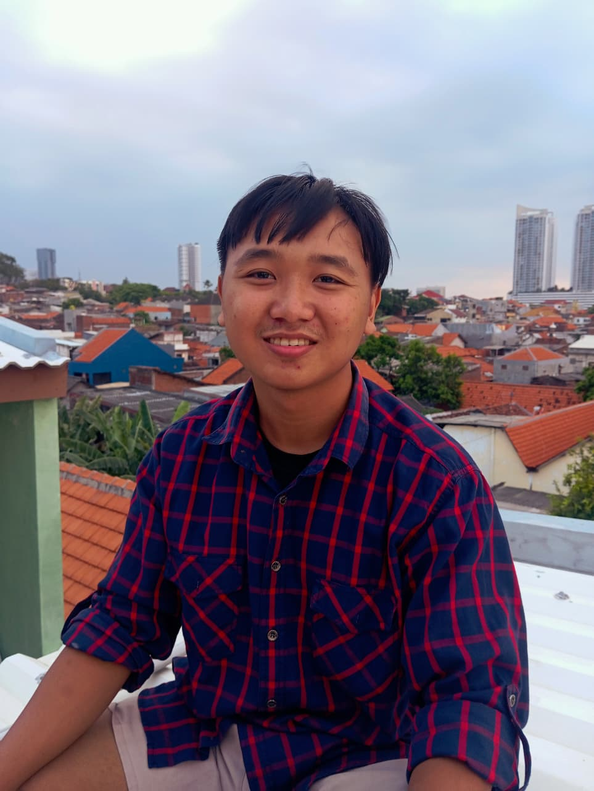

Nama
Destyan Ricky Salim
ARTIKEL PERSONAL
Mahasiswa Teknik Informatika yang senang mengubah ide menjadi pengalaman digital yang fungsional, menarik, dan mudah dipahami.
Teman belajar

01 / TENTANG SAYA
Nama saya Destyan Ricky Salim. Saya merupakan mahasiswa Jurusan Teknik Informatika di Universitas 17 Agustus 1945 Surabaya. Ketertarikan saya pada informatika, game, dan 3D mendorong saya untuk selalu mencoba hal baru dan memahami bagaimana sebuah ide dapat diwujudkan melalui teknologi.
Saya terbiasa mengerjakan proyek pribadi dengan menganalisis referensi, memodifikasi desain, dan berdiskusi untuk menemukan arsitektur program yang tepat. Bagi saya, proses belajar bukan hanya tentang menyelesaikan tugas, melainkan tentang membangun cara berpikir yang teliti dan karya yang bermanfaat.
Destyan Ricky Salim
Teknik Informatika
Universitas 17 Agustus 1945 Surabaya
Lulusan SMK 17 Agustus 1945 Surabaya
NIM 1462500115
Lahir 15 Desember 2007
02 / PEMBELAJARAN
Beberapa mata kuliah yang menjadi bagian dari perjalanan akademik saya.
Menyusun gagasan dan menyampaikannya secara terstruktur.
Melatih penalaran untuk memecahkan masalah secara sistematis.
Memahami dasar-dasar ilmu komputer dan teknologi informasi.
Membangun halaman web yang interaktif dan responsif.
03 / KEMAMPUAN
Memahami HTML, CSS, JavaScript, Java, dan PHP untuk membuat solusi web dari dasar.
Mampu mengerjakan proyek secara mandiri dengan membagi pekerjaan, meninjau hasil, dan memperbaiki detail secara bertahap.
04 / TENTANG YANG DISUKAI
Di waktu luang, saya menikmati anime, manga, novel, musik lofi, dan dunia visual yang memberi banyak inspirasi.
Konten multimedia dari proyek “Tentang yang Disukai”.
05 / TERIMA KASIH
Terima kasih sudah berkunjung ke artikel personal saya. Semoga halaman ini memberi gambaran tentang siapa saya dan apa yang saya sukai.